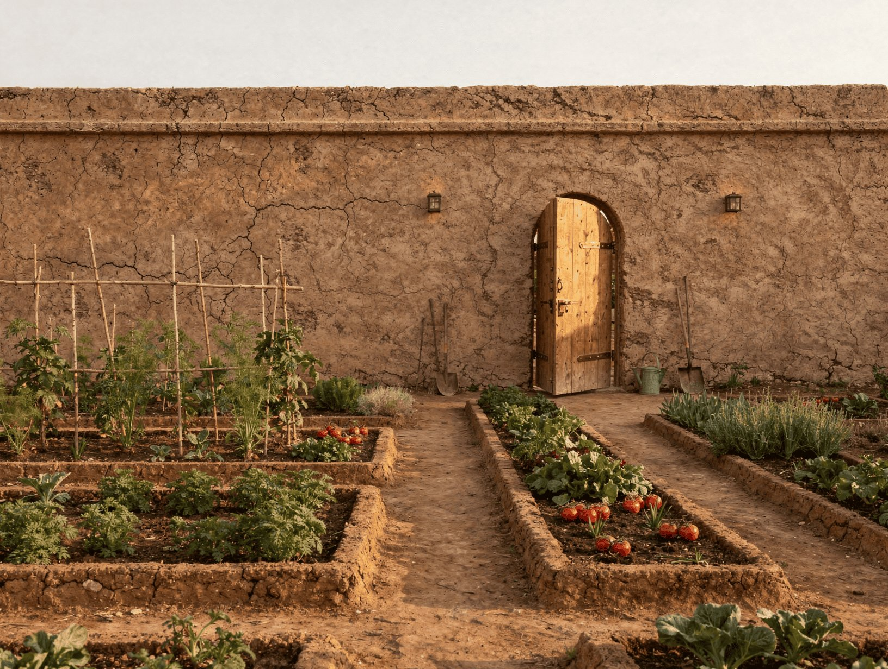
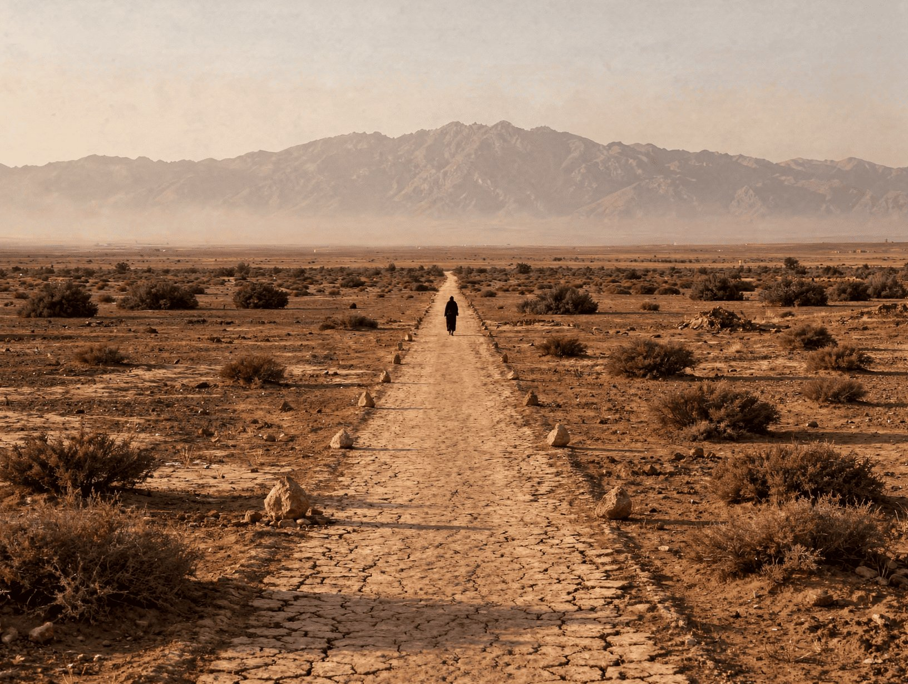

Toile Blanche Marrakech ne se raccorde pas au monde. Elle fonctionne avec ce qu'elle produit. Chaque cluster est une unité énergétique et hydrique indépendante. L'ensemble de la propriété fonctionne en autarcie complète, avec raccordement réseau en secours uniquement, jamais en source principale.
Cette contrainte est architecturale autant qu'éthique. Elle détermine l'implantation des équipements, la conception des toitures terrasses, les locaux techniques, le jardin, la zone de service. Elle doit être intégrée dès l'APS, pas rajoutée en fin de chantier.

La palette est limitée à 6 matériaux. Chaque matériau est noble et local (ou localement transformé). Aucune exception sans accord préalable écrit des Leroy Brothers. Aucun matériau de synthèse en surface visible.
Ces contraintes ne peuvent être levées par aucune décision technique, budgétaire ou réglementaire. Elles sont la traduction architecturale du veto artistique absolu des Leroy Brothers. Toute proposition d'architecte ou d'entrepreneur qui y contrevient est refusée.
| Élément | Surface | Budget | Remarques |
|---|---|---|---|
| Phase 1, Construction principale, 18 mois | |||
| 12 mini-riads 1BR, 3 clusters (Clusters 1, 2, 3) | 990m² bâti + 360m² cours | 2 390 000€ | ~199 000€/unité. Murs partagés. Piscine privée 4×5m par unité. |
| Bâtiment principal, rénovation 1 200m² | 1 200m² | 700 000€ | Restaurant, galerie, réception, bar, rooftop, back-of-house. |
| Système off-grid Phase 1 (3 clusters) | 90 000€ | PV, batteries, solaire thermique. Autonomie complète. | |
| Biodigesteur + traitement eau + citernes | 80 000€ | Dimensionné 20 unités dès Phase 1. | |
| Voiries, réseaux, portail, mur clôture | 120 000€ | Conduits Phase 2-3 inclus, creuser une fois. | |
| Provisions Phase 2-3 (zones réservées, conduits) | 43 000€ | Clusters 4 et 5 prévus et raccordés. | |
| Zone service + presse hydraulique Les Compressions | 15 000€ | Presse acquise sur Fonds de Croissance an 1. | |
| Jardin Phase 1 | 20 000€ | Oliveraie complémentaire, potager, clusters. | |
| Honoraires et frais | 117 000€ | MOE 2%, contrôle technique, notaire, SIYAHA, fiscal. | |
| Provision aléas (6%) | 204 000€ | Gilles Leroy sur site en permanence. | |
| Total construction Phase 1 | 3 809 000€ | ||
| Fonds de Croissance, financement opérationnel (35% résultat net) | |||
| Studio Leroy Brothers | 150m²+ | ~275 000€ | An 1. 6m plafond, clérestoire nord, palan, sol béton. |
| Hammam Cluster 2 | ~60m² | ~80 000€ | An 2. Tadelakt, pierre, vapeur, une salle. |
| Off-grid Clusters 4 et 5 | ~60 000€ | An 2-3. Conduits déjà posés en Phase 1. | |
| Phase 2, Cluster 4, Année 3-4 | |||
| Cluster 4 (3×1BR + 1×2BR) + programme culturel | ~530m² bâti | ~850 000€ | Auto-financé. Galerie intime + cinéma extérieur. |
| Phase 3, Cluster 5, Année 6-7 | |||
| Cluster 5 (3×1BR + 1×2BR) + programme physique | ~530m² bâti | ~900 000€ | Auto-financé. Local vélos, pétanque, départ cairns. |
| Total programme complet, 20 unités | ~5 559 000€ | 100% financement propre après Phase 1. | |
Adam Elhattami, AD Architectes (Marrakech), a déjà travaillé sur Toile Blanche Marrakech en 2018 (dossier Draa Natfrante). Connaît le concept, le client, le territoire. A les agréments marocains requis. À réactiver en priorité pour évaluer sa disponibilité et son alignement avec le programme actuel, significativement différent du 2018.